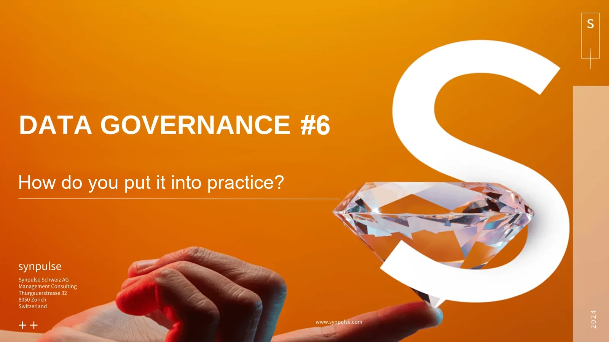
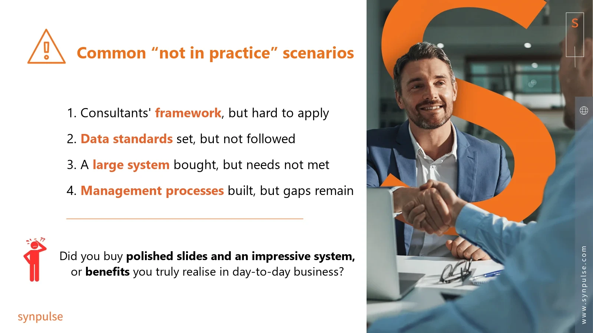
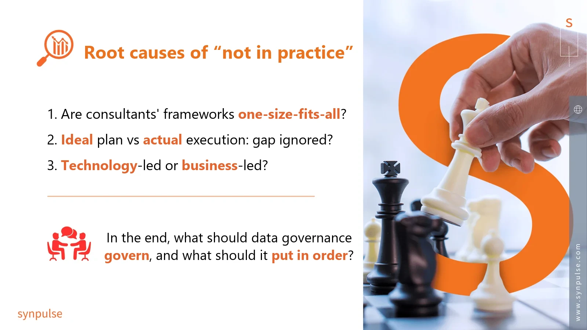
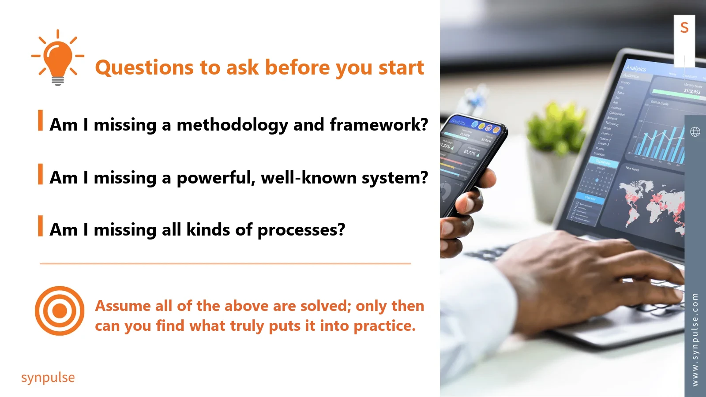
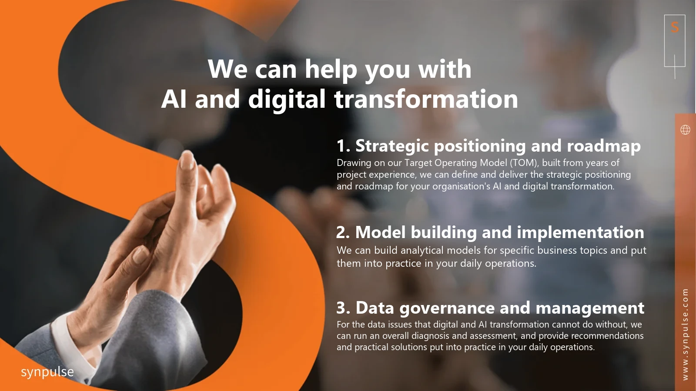

Recently, several clients and partners have asked us the same question: why does data governance never seem to be put into practice? This article highlights our experience and observations, and offers some directions to think about.
Why does data governance fail to take hold? From framework to real value
In today’s wave of digital transformation, data governance has become a key strategy for many organisations. Yet many of them invest heavily, bringing in frameworks, standards and systems of every kind, and still struggle to put it into practice or to create real value for the business. What causes this pattern of “frameworks without application”, and how can it be avoided?

When driving data governance forward, many organisations run into the same few situations in which it is never put into practice:
1️⃣ A framework was introduced, but it is hard to apply
Many organisations bring in a data governance framework from consultants or industry standards. But these frameworks can be too theoretical and detached from the organisation’s actual business scenarios, so they are hard to apply in reality.
2️⃣ Data standards were set, but they are not followed
Many organisations set data standards but have no mechanism to make sure they are followed. For example, a data format standard has been defined, yet each department still goes its own way, so data quality remains uneven.
3️⃣ A large system was bought, but it does not meet the need
Many organisations believe that buying a powerful data management system will solve their data governance problems. Without a clear needs analysis and the involvement of internal users, however, these systems may end up not solving the real business pain points.
4️⃣ Management processes were built, but gaps remain
Some organisations spend a great deal of time building data governance processes but lack enforcement and oversight, so data errors and opaque processes still appear when the work is actually carried out.
The underlying question behind all of this is: did the organisation buy a “polished system”, or has data governance truly become part of how the business runs?

Why is data governance so hard to put into practice?
So why do these data governance programmes fail to take hold? The root causes come down to the following:
🔍 1. Are the consultants’ frameworks one-size-fits-all?
Many organisations rely on standardised frameworks from consulting firms. These are often generic templates, not tailored to the organisation’s own business model and data needs. When a framework does not fit how the organisation actually operates, it is naturally hard to put into practice.
🔍 2. Has the gap between the ideal plan and actual execution been considered?
Many data governance programmes look perfect at the planning stage, but stall during execution because of organisational culture, technical constraints or staff awareness. Organisations often overestimate how readily employees will accept new standards and processes, and overlook the importance of change management.
🔍 3. Technology-led vs business-led: who should own it?
Many data governance projects are led by IT, but IT and the business often have different goals. IT focuses on technical architecture and system delivery, while the business wants to use data quickly to solve real problems. If the organisation cannot find a balance between technology and business, data governance struggles to create real value.
Ultimately, what is data governance actually meant to “govern”, and what is it meant to “put in order”? Does your organisation really understand this, and is everyone “on the same page”?
In other words, an organisation should first be clear about the data pain points it wants to solve, and only then design a suitable governance strategy, rather than adopting frameworks and systems blindly.

So how do you really put data governance into practice?
Before pushing data governance into practice, an organisation should first ask itself a few questions:
💡 1. Are we missing a methodology and framework?
If the concept of data governance is still unclear, the organisation can start by bringing in a suitable methodology and framework. What matters more is making sure these frameworks are tied to the organisation’s business needs, rather than simply following industry standards.
💡 2. Are we missing a powerful, well-known system?
A good data governance system can certainly make management more efficient, but it should not be the only way to solve the problem. The organisation should first make sure the rules and processes of data governance are clearly defined, and then choose the right technology tools to support them.
💡 3. Are we missing all kinds of processes?
Some organisations believe that a complete set of processes will solve their data governance problems. Without effective execution and oversight, however, these processes may exist only on paper. The organisation should make sure its governance processes are truly built into day-to-day business operations, not kept separate from them.
We always encourage clients to ask: even if all of the questions above were solved, would it then be put into practice? If not, where are the obstacles?
In closing: only “putting it into practice” creates value. Polished slides and flashy systems cannot.
